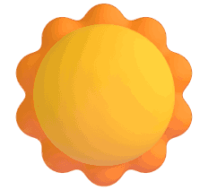
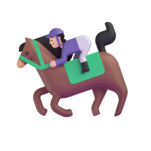
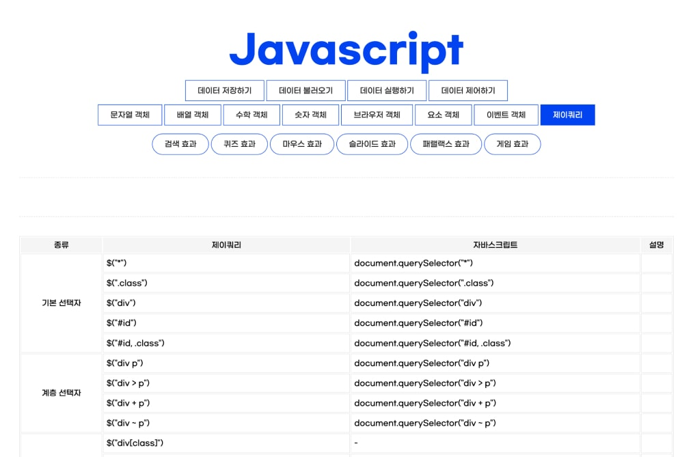

노력은 결코 배신하지 않는다는 말을 굳게 믿어,
이루고자 하는 바가 있다면 노력의 끝이 보일 때까지 달려갑니다.
신입의 열정을 가지고 성실하고 겸손하게 끝까지 나아가는
프로트엔드 개발자가 되겠습니다.
봄날의 햇살처럼, 다른 사람들과 따뜻함을 전하고 나눌 줄 아는 사람입니다.

어딜가나 저를 만난 분들은 긍정적이라는 단어를 빼놓지 않고 말씀하십니다.
“긍정”은 저를 대표하는 단어입니다.
“힘들때 웃는 자가 일류다” 라는 말을
믿고 안 좋은 일이 있을 때 웃고 빠르게 회복하기 위해
노력합니다.
어디에서나 잘 어울립니다. 둥글둥글한 성격 탓에
인연을 소중하게 생각하며 주위 사람들이 저를 편하게
느낄 수 있게 행동합니다.
책임의식을 가지고 맡은 바는 끝까지 해내고 마는
끈질김이 있습니다.

작업한
거볼래
드루와
웹 표준을 준수한 사이트부터, 반응형 사이트, PHP로 작업한 사이트,
REACT, VUE로 만든 사이트까지 기초학습부터 심화학습까지 공부하였습니다.
이 외에도 codepen을 이용하여 만든 애니메이션, 블로그 포스팅, 조별 작업 등을
통해 꾸준하게 코딩 공부를 하였습니다.
그 결과, 지금 바로 공개합니다 두둥!
웹 표준 사이트 코딩하기
웹 표준이란, ‘웹에서 표준적으로 사용되는 기술이나 규칙’을 의미하며,
웹 표준을 따르면 많은 장점이 따릅니다.
위 사이트는 웹 표준을 가장 잘 준수한 기본형태의 사이트입니다.
티스로티 블로그를 저만의 스타일로 꾸민 후 꾸준히 블로그를 관리해주었습니다.
블로그는 기본적인 HTML, CSS, Javascript부터 다양한 주제로 그날 배운 내용을
복습하여 포스팅하였으며 1일 1블로그 하려고 노력하였으며 최근에는 Javascript를 이용하여 프로그래머스 문제를 매일 해결하고 있습니다.
시대가 빠르게 변하듯 새로운 변화가 끊임없이 일어나는 웹 개발 환경에서
트렌드에 뒤처지지 않기 위해 대세인 자바스크립트 공부를 많이 했습니다.
자바스크립트는 처음에는 공부를 해나갈수록 어렵고 고난길이었지만,
원리를 많이 익히고 프로그래머스를 풀며 노력을 해도 여전했습니다. (반전)
그러나, 노력은 결코 배신하지 않는다는 것을 알기에
최선을 다해 부지런히 공부했더니 실력이 나날이 발전함을 느낄 수 있었습니다.
지금 바로, 자바스크립트 노력형의 극복기 공개합니다 두둥!
데어터 저장하기부터, 불러오기, 실행하기, 제어하기까지
예제 하나하나 꼼꼼하게 공부하였습니다.
그래서 매주 보는 시험에서 매번 좋은 성적을 거둘 수 있었습니다.
자바스크립트는 객체가 주를 이루는 언어인만큼 객체 공부를 많이 해야하는데,
저는 객체 관련 공부 중 배열 객체가 가장 어려웠습니다.
그러나, 매일 자바스크립트를 이용하여 프로그래머스를 풀며 객체를 다양하게 활용
해봄으로써 어려움을 극복해나가고 있습니다!

React의 방법과 동일하게 Movie사이트 API와 Youtube API와 Unsplash사이트의 API를 포스트맨 사이트에서 가져와 Vue 형식으로
연동시켜주었습니다.
기본 개념을 숙지한 후 응용력을 높이기 위해 자바스크립트를 이용하여
총 6종류의 여러 효과들을 만들었습니다.